A very brief introduction
I suppose everyone knows that
 is irrational, and has read the standard textbook proof, with its
we may suppose without loss of generality that
is in reduced form...
. I
hate
the standard textbook presentation of the proof. I don't hate the
proof
; rather I hate the
presentation
.
is irrational, and has read the standard textbook proof, with its
we may suppose without loss of generality that
is in reduced form...
. I
hate
the standard textbook presentation of the proof. I don't hate the
proof
; rather I hate the
presentation
.
Sadly (in my view) youngsters don't get a chance to
think
 before
being exposed to its brutal irrationality proof that rambles on about "we may suppose that ... may be expressed in reduced form" (even G. H. Hardy - an early hero of mine - is guilty of it in his classic
A Mathematician's Apology
). Youngsters
should
be given an opportunity to
attempt
to find a 'fraction' - a term that youngsters probably prefer over 'rational number' - that
possibly
equals
before
being exposed to its brutal irrationality proof that rambles on about "we may suppose that ... may be expressed in reduced form" (even G. H. Hardy - an early hero of mine - is guilty of it in his classic
A Mathematician's Apology
). Youngsters
should
be given an opportunity to
attempt
to find a 'fraction' - a term that youngsters probably prefer over 'rational number' - that
possibly
equals
 (of course they're in for a surprise). Since that is a topic on which I have already written at considerable length in my 56-page
Number theorising
with Talented Youth
(available from the Talented Youth corner of my web site) then I will not pursue it here.
(of course they're in for a surprise). Since that is a topic on which I have already written at considerable length in my 56-page
Number theorising
with Talented Youth
(available from the Talented Youth corner of my web site) then I will not pursue it here.
Briefly, how do I think irrationality (as a subject to be contemplated) can/should be introduced to youngsters? From my experience, many youngsters think that
 is
1.414... (the calculator displayed value):
is
1.414... (the calculator displayed value):
> evalf(sqrt(2), 10);
>
A thoughtful student -
when pressed
- will tell you that 1.414213562
is
not
 because, when you square it, you
get a decimal that ends in a 4, and so it can't be 2. More pressing (that could be motivated by by further computations like:)
because, when you square it, you
get a decimal that ends in a 4, and so it can't be 2. More pressing (that could be motivated by by further computations like:)
> evalf(sqrt(2), 40); # this "really ends" in '7'
>
will lead - with proof (the crux!) - to the conclusion that 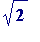 does not have a terminating decimal value. That's an elementary, but serious result. (Aside. What, though, is the non-terminating decimal value of ; what are its digits? Once, when I was a student in London, I sat with a group of other students in the company of C. A. Rogers. Someone asked him which question he would most like to have answered. He replied: to know the decimal expansion of the square-root of two . We all knew what he meant. Many years later, in June 1986, I travelled to London to attend the UCL meeting marking C.A.R.'s retirement. Looking back over his life, Rogers remarked on his good fortune to have had a good teacher at school, and he mentioned the friendly competition that he had later enjoyed with Wolfgang Schmidt.)
Next, in my view (based on teaching
experience
) the discussion can continue on this line of observation (followed by appropriate questioning): numbers with terminating decimal values are simply fractions with a very particular type of denominator (powers of 10), and so saying (e.g)
that
 is
not
1.414 is simply saying that it is
not
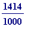
, but (the motivated question) could it be (say)
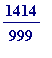
? Well, let's see:
is
not
1.414 is simply saying that it is
not
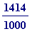
, but (the motivated question) could it be (say)
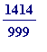
? Well, let's see:
> evalf(1414/999);
>
So, it isn't. But could it be something else ? Some other fraction? Could it be (say) 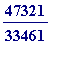 ?:
>
evalf(sqrt(2), 10);
evalf(47321/33461, 10);


No. And why not? Resorting to computation we see they aren't equal, as they differ on the last decimal point:
>
evalf(sqrt(2), 11);
evalf(47321/33461, 11);

But could
 be (say)
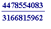
?:
be (say)
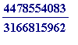
?:
>
evalf(sqrt(2), 20);
evalf(4478554083/3166815962, 20);

>
Again, no. But why not? And this is the point at which one can start asking for reasons independent of computation. Of course it's also the time to start asking: where are those fantastic fractions coming from? It's the sort of thing - if you don't know about this - you may read about in the Talented Youth corner of my web site, or in my ICTMT4 Plymouth 1999 talk on L- and R-approximations , or in the first year section of my Courses I Teach corner of my web site.
Why
can't
be
 ? Suppose it was, then
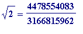
, and then?
? Suppose it was, then
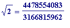
, and then?
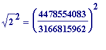
,
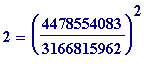
, and?
2*
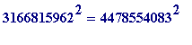
(and then what?)
Impossible since... (e.g.: the LHS ends in '8', the RHS ends in '9'; the LHS is even, the RHS is odd). That's not the end of it, of course. But it all eventually leads to having a proof that
 is
irrational
. In short, by following a well-motivated path, one may lead young minds to a basic understanding of the fundamental mathematical concept of irrationality. If we are interested in teaching, then this - or something like it - is what we should be doing. Incidentally, a much faster route into irrationality may be given by asking questions like:
is
irrational
. In short, by following a well-motivated path, one may lead young minds to a basic understanding of the fundamental mathematical concept of irrationality. If we are interested in teaching, then this - or something like it - is what we should be doing. Incidentally, a much faster route into irrationality may be given by asking questions like:
- Is (as the old log tables used to show)?
- Is (as ones calculator may show, or, in Maple)?
> evalf(log[10](2));
>
Then, having easily argued that
does not have a terminating decimal value, move on to easily argue that it is, in fact, irrational. While numbers like (e.g.)
 and
are both irrational - the latter having the easier irrationality proof - these two numbers are fundamentally
quite different
: the former is an algebraic number, while the latter is a transcendental number. But I am getting ahead of myself. It is time I moved on to the next section.
and
are both irrational - the latter having the easier irrationality proof - these two numbers are fundamentally
quite different
: the former is an algebraic number, while the latter is a transcendental number. But I am getting ahead of myself. It is time I moved on to the next section.